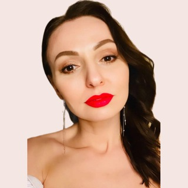

Меняются мужчины, а сценарий повторяется. Ответьте на 6 вопросов и узнайте, какой Защитник внутри ведёт вас в знакомые отношения, кого он бережёт и как с ним поговорить прямо сейчас
В IFS нет «плохих» частей. Это не диагноз, а знакомство с собой
Произнесите про себя не так, как обычно, а по-новому. Почувствуйте разницу
Где в теле вы чувствуете эту часть, когда она говорит?
Спросите её мягко: «Чего ты боишься, если перестанешь так делать?» Часто она отвечает так:
Та, кто сейчас смотрит на эту часть с интересом, а не с осуждением, это вы
В IFS это состояние называют Self: тишина, ясность, спокойствие
«Я - это не моя тревога и не моя боль. Во мне есть взрослая, устойчивая часть, которая может со всем справиться»
Отметьте, где вы сейчас:
Чтобы изменить сценарий, недостаточно составить список «красных флагов» или пообещать себе «больше никогда». Защитник, который у вас у руля, сильнее обещаний: он уверен, что спасает вас от боли, и снова выберет знакомое
Бороться с ним бесполезно. Его нужно услышать, понять, какую потребность вы закрываете через эти отношения, и увидеть, в какой момент вы перестаёте выбирать себя
Бесплатная онлайн-встреча 30-40 минут. Без погружения в травмы: найдём, кто у руля, сделаем шаг назад и почувствуем контакт с Self
Написать «ДИАГНОСТИКА»Если рядом с партнёром вам опасно, не оставайтесь с этим одна. Всероссийский телефон доверия для женщин: 8-800-7000-600